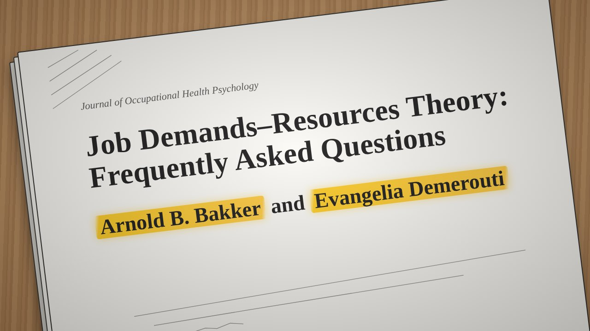

Why do some people burn out at work while others thrive, and what can organizations do about it?
This course looks at the psychology of work: when work is meaningful and what drives people to perform well, how leaders make organizations greener and keep an ageing workforce employable, how communication technology changed the line between work and home and how people recover from stress, and how digital media and AI are changing personnel selection. The aim is always the same: read the research critically, connect it, and turn it into theory- and evidence-based advice for real workplace problems.
- 1⚖️ Job demands and resourcesMeetings 1 and 2 · JD-R theory, job crafting, motivation and meaningful work
- 2Themes 2 to 4Meetings 3 to 8, added as the course goes on
Four themes, two tutorial meetings each (M = meeting). The map fills in as the course goes on. Theme titles are the course's own.
Two tutorials per theme, a lot of self-study, the readings as your toolkit
Each meeting starts from a short case and a set of learning goals. You prepare the readings on your own, then discuss and connect them in the weekly tutorial. The course guide is clear about the trap: contact hours are few, the literature load is high, and the exam is too much to digest at the last minute, so keep your reading in step with the course.
Topics across the course:

⚖️ Why do some burn out while others thrive?
Case: your own study or side job
Every job has demands that cost effort and resources that help you cope and grow. When demands are high but backed by ample resources, people flourish; when demands outweigh resources, burnout becomes a risk. The first meeting asks you to look at your own workload and resources, and six readings over two meetings give you the theory. Meeting 1 covers its rules and how it grew; meeting 2 its roots, the team level, and what employees can do themselves.
Meeting 1 · what the theory says
- 1Bakker & Demerouti (2024): JD-R theory, frequently asked questions
- 2Bakker, Demerouti & Sanz-Vergel (2023): JD-R theory, ten years later
Meeting 2 · where it comes from, and what teams and employees can do
- 3Demerouti (2025): JD-R and conservation of resources theories
- 4Junker, Bakker & Derks (2025): team resource mobilization
- 5Demerouti & Bakker (2024): job crafting
- 6Bakker & Scharp (2024): playful work design
Themes 2 to 4, two meetings each
Each theme gets its own chapter here once you start it: the case, the readings per meeting and the big idea, with links into its study pages. For now, the theme titles and the topics of each meeting's readings, as listed on Canvas.
Meeting 4: green HR and green crafting, sustainability champions, feedback on energy use, pro-environmental behaviour.
Meeting 6: boundaries and role transitions, technology-assisted supplemental work, smartphone use, detachment and burnout.
Meeting 8: gamified and game-based assessments in selection.
Who can act on demands and resources?
Theme 1's multilevel view gives you a question to ask in every later case: at which level can something change? The highlighted levels are the ones Theme 1 has covered.
HR practices, climate and job design that trickle down to every employee.
Theme 1 · multilevel JD-RShapes the team's demands and resources and can be a key resource.
Theme 1 · leadershipShares resources, and must mobilize them, inside and outside the team.
Theme 1 · team mobilizationCrafts the job and makes tasks playful, or slides into self-undermining.
Theme 1 · crafting and playHome, recovery and technology that blur the line between the two.
New demands and resources, from communication tools to AI in selection.
The course goals
Theme 1: explain when work is considered meaningful in the context of job demands–resources theory, and understand what drives employees to perform well.
Theme 2: explain what leaders can do to make employees engage in green behaviours, and what sustainable employability is and how it can help the ageing workforce.
Theme 3: explain how communication technology changed the work–home interface, and how employees recover from workload and stress.
Theme 4: explain the impact of digital media and gamification on personnel selection, and the benefits and pitfalls of AI in selection.
People thrive when demands are met by enough resources, and organizations, leaders, teams and employees can all change that balance. The coming themes add green leadership, ageing, technology, recovery and selection.
🪝 Demands drain, resources fuel, everyone can act.Study tip: in any case, first sort what drains and what fuels, then ask which process wins, and at which level you could intervene.
Where to go from here
- Read the theme's story here, to know the case and the question.
- Walk through each reading step by step, then flip through its nutshell deck.
- Check yourself on the learning goals and prepare the tutorial.
- Finish with the practice exam for that theme.